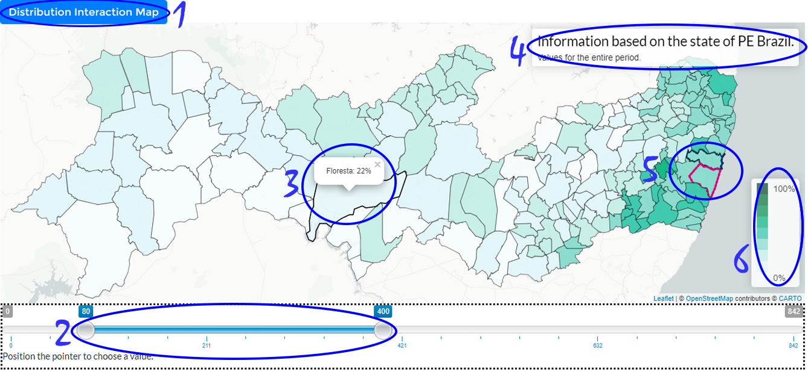
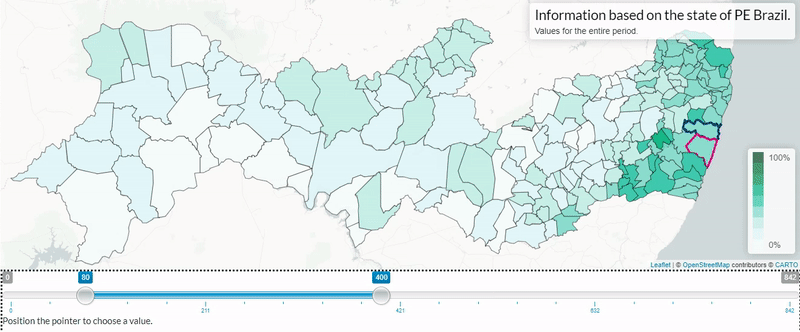
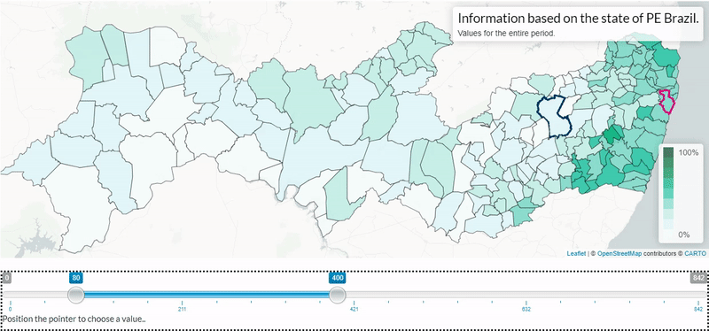
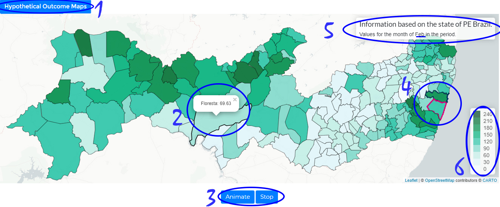
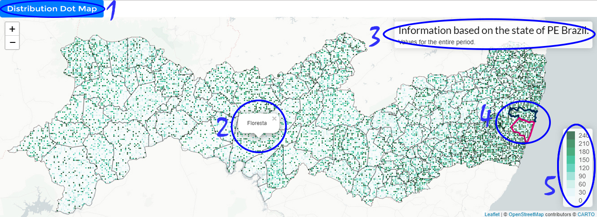

The Interaction approach allows you to probe the distribution corresponding with each area and the system will quantify the probability of different comparison operations. The first of these operations consists of asking the question: "how likely are the values of this distribution to be within a range of values from X to Y". To achieve this all you have to do is adjust the range represented by the handles of the horizontal slider toolbar. The second operation supported is to compare the distribution of values in one area against the other areas on the map. Using a simple double click on the area of interest you can ask for each area A: "what is the probability of the values in A being smaller than the values on the selected area?". The resulting probabilities of both operations are mapped with colors on each area of the map.
When you are ready to proceed just click the button "Next".
Distribution Interaction Map
On this screen you will see the probability of an event occurring up to a given range of values. And you can choose this range.

1
indicates the visualization being used (only available in the user study).
2
indicates the horizontal bar that serves as a filter where a range can be chosen to verify the probability that each area contains the range chosen within its data distribution.
3
Hovering on an area shows its details.
4
contains map title.
5
Some regions will happen their boundaries highlighted (in blue or pink) so they can be spotted easily.
6
A color legend is present do enable you to map colors and values.
When you are ready to proceed just click the button "Next".
Distribution Interaction Map
We have prepared a brief demonstration of the working tool before you can interact with the tool yourself.
The tool will help you get the answers as long as you can use it. So watch closely before continuing.

When you change the handles of the horizontal slider this reflects on the map: the probability of the distribution in each area is within the specified range is shown in colors the darker the color the greater the probability. Note that the horizontal bar can be moved to select different range sizes; that can be smaller or bigger. Also notice that with after fixing the size of range using the handles, the horizontal bar can be by whole moved without alter the size of range.
When you are ready to continue, click Next.
Distribution Interaction Map
With this tool you can also compare the distribution of one area with others and see how likely it is that a area is small from another area. This will be very important in this study.
To use this feature you will need only a few simple commands.

Initially you need to double click on any area, then the others will be compared and the selected area will be highlighted by black color.
For example if we want to know the probability that it will rain in Recife less than in Caruaru. Then we double click on Caruaru and go to Recife to see what the probability is.
Hovering over areas will give you a probability that the distribution of other areas is smaller than you chose for comparison.
If the selected area is wrong just double click on it and the view will be restored.
Selecting a area to compare to the others will block the horizontal value bar until the interaction ends.
To undo just double click on the selected area for comparison.
Remembering the last example: if we want to compare and know the probability of the Recife (pink) distribution be less than Caruaru (blue) double click Caruaru (blue) then hover over Recife and visualize the displayed value. Finally we undo the selection by double clicking on Caruaru. This view uses a double hue color scheme to show the probability on the map the darker the color the greater the probability.
When you are ready to proceed just click the button below "Next."
Distribution Interaction Map
We provide a few simple questions to help you the better understand the adaptation of the visualization.
First locate the areas of Recife(pink) and Caruaru(blue).
Answer to yourself: What is the probability that it will rain between 50 mm to 250 mm in Recife?(Ans. 56)
Answer to yourself: What is the probability that it will rain below 100 mm in Caruaru? (Ans. 89)
Answer to yourself: What is the probability that it will rain above 100 mm in Recife? (Ans. 53)
Using the compare interaction in the tool answer to yourself: What is the probability that it will rain in Recife (pink) less than Caruaru (blue)? (Ans. 6)
Use the tool as many times as necessary and try to find color patterns and differences for different scenarios. Be sure to test different parameters.
When you are ready to proceed just click the button "Next".
Hypothetical Outcome Maps
The purpose of this technique is to display a sample extracted from hypothetical (drawn) results from a distribution. For each area, a map is created that becomes a kind of frame in a lively presentation that changes over time giving the impression of a movie. You will need to gather information from multiple frames using the visual system or some more mechanical process such as counting to understand the data. The distribution value represented by the area is mapped as a color to the corresponding area. This view uses a single end color scheme; how high or low is the value of each area in each frame.
When you are ready to proceed just click the button "Next".
Hypothetical Outcome Maps
On this screen you will see the animated hypothetical outcome maps. And you must make decisions by observing the behavior of the areas.

1
indicates the visualization being used (only available in the user study).
2
Hovering on an area shows its details.
3
shows the stop and resume animation buttons.
4
Some regions will happen their boundaries highlighted (in blue or pink) so they can be spotted easily.
5
contains map title.
6
A color legend is present do enable you to map colors and values.
When you are ready to proceed just click the button "Next".
Hypothetical Outcome Maps
We provide a few simple questions to help you the better understand the adaptation of the visualization.
First locate the areas of Recife(pink) and Caruaru(blue).
Answer to yourself: what is the probability that it will rain between 50 mm to 150 mm happen in Recife? (make an estimate) (Ans. 56)
Answer to yourself: what is the probability that it will rain below 100 mm in Caruaru? (make an estimate) (Ans. 89)
Answer to yourself: what is the probability that it will rain above 100 mm in Recife? (make an estimate) (Ans. 53)
Answer to yourself: what is the probability that it will rain in Recife (pink) less than Caruaru (blue)? (make an estimate) (Ans. 6)
Use the tool as many times as necessary and try to find color patterns and differences for different scenarios. Be sure to test different parameters.
When you are ready to proceed just click the button "Next".
Distribution Dot Map
This approach consists in drawing points that represent values of a distribution in each geographical area defined on the map. Each dot is colored according to the corresponding value. Within the boundaries of each area the proportion of points in each color represent the proportion of the corresponding values for the distribution in that particular area. Therefore, to judge the probability of a certain fact about the distribution one needs to count/estimate the number of dots within the area satisfying the property under study. This view uses a single scale color scheme to show the values on the map: as darker the color as higher the value.
When you are ready to proceed just click the button "Next".
Distribution Dot Map
On this view you will see the points representing a probability distribution for each area on the map. You should analyze the distribution of values within each area to answer the questions.

1
indicates the visualization being used (only available in the user study).
2
Hovering on an area shows its details.
3
contains map title.
4
Some regions will happen their boundaries highlighted (in blue or pink) so they can be spotted easily.
5
A color legend is present do enable you to map colors and values.
When you ready to proceed just click the button "Next".
Distribution Dot Map
We provide a few simple questions to help you the better understand the adaptation of the visualization.
First locate the areas of Recife(pink) and Caruaru(blue).
Answer to yourself: what is the probability that it will rain between 50 mm to 150 mm in Recife? (make an estimate) (Ans. 56)
Answer to yourself: what is the probability that it will rain below 100 mm in Caruaru? (make an estimate) (Ans. 89)
Answer to yourself: what is the probability that it will rain above 100 mm in Recife? (make an estimate) (Ans. 53)
Answer to yourself: what is the probability that it will rain in Recife (pink) less than Caruaru (blue)? (make an estimate) (Ans. 6)
Use the tool as many times as necessary and try to find color patterns and differences for different scenarios. Be sure to test different parameters.
When you are ready to proceed just click the button "Next".
CIn-UFPE - Estudo de Usuário.
UM ESTUDO COMPARATIVO DE TÉCNICAS DE VISUALIZAÇÃO DE DISTRIBUIÇÕES PARA DADOS GEOGRÁFICOS.
Objetivo
- O objetivo desse estudo é descobrir qual a maneira mais eficaz de retratar riscos e incertezas para a visualização geográfica de dados para pessoas com e sem experiência em visualização (gráficos e afins) e estatística (coleta, registro e análise de dados numéricos por amostras).
- Os possíveis benefícios desta pesquisa são conhecer e aprender tipos de visualização de dados, técnicas estatísticas e possíveis integrações entre ambas que possam auxiliar o processo da tomada de decisão por pessoas.
- Mas pode ocorrer também situações nas quais você se sinta constrangido e tímido por não saber a resposta para uma pergunta ou porque você não saiba o que fazer no sistema, visto que pode se tratar de algo novo para você.
- Sua participação é de grande valor, agradecemos pelo interesse.
Incentivo Financeiro de Participação
Nada lhe será pago e nem será cobrado para participar desta pesquisa, pois a aceitação é voluntária, mas fica também garantida a indenização em casos de danos, comprovadamente decorrentes da participação na pesquisa, conforme decisão judicial ou extrajudicial.
Instruções Básicas
- Nas páginas seguintes aparecerão 2 etapas a de tutorial da ferramenta em seguida a de perguntas e respostas sobre a ferramenta.
- Nas Próximas telas você será introduzido a ferramenta da pesquisa.
- Será aplicada uma abordagem de visualização de mapa.
- Estimamos que pode levar de 30 a 40 minutos para completar o questionário, então pedimos que separe um horário onde possa fazê-lo com calma.
Observações Técnicas:
- Antes de iniciar o tutorial e as questões, pediremos algumas informações sobre você e sua experiência com visualização e estatística. Essas perguntas são importantes para entendermos melhor o contexto da pesquisa.
- Pedimos para abrir esse link no navegador Google Chrome.
- Não recarregue ou volte a página durante o preenchimento do formulário, pois vai descartar o seu progresso.
- Se uma das abordagens não carregar de imediato, pedimos que aguarde alguns segundos.
Dados coletados
Ao clicar em "Iniciar", você aceita e consente que:
- Utilizaremos os dados das suas respostas para o desenvolvimento de nossa pesquisa e nada além disso.
- Os dados coletados neste estudo não serão usados para identificar você.
- Você não será identificado em nenhuma publicação deste estudo, ou em qualquer dado compartilhado com outros pesquisadores.
- Sua participação é confidencial.
- Você pode desistir a qualquer momento.
- Os dados são coletados apenas quando o formulário é submetido.
- Caso queira mais informações, ou tenha alguma dúvida a respeito da pesquisa, não hesite em entrar em contato conosco:
(ejs2@cin.ufpe.br,nivan@cin.ufpe.br)
Comitê de Ética da UFPE
Esse estudo é regido pelos padrões do Comitê de Ética em Pesquisa Envolvendo Seres Humanos da UFPE.
É de suma importância que você leia e aceite os termos legais que descrevem os pontos anteriores, os termos estão disponíveis a baixo e ao término da pesquisa serão encaminhados ao seu email para seu total respaldo. TERMO DE CONSCENTIMENTO LIVRE E ESCLARECIDO. CONSENTIMENTO DA PARTICIPAÇÃO DA PESSOA COMO VOLUNTÁRIO(A)
Você aceita os termos acima apresentados?
Em caso de dúvidas relacionadas aos aspectos éticos deste estudo, você poderá consultar o Comitê de Ética em Pesquisa Envolvendo Seres Humanos da UFPE no endereço: (Avenida da Engenharia s/n – 1º Andar, sala 4 - Cidade Universitária, Recife-PE, CEP: 50740-600, Tel.: (81) 2126.8588 – e-mail: cepccs@ufpe.br ).